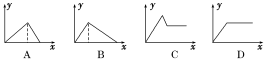
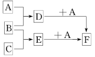

人教版必修1第三章金属及其化合物测试卷（A卷）
一．选择题（本题包括18小题，每小题只有1个选项符合题意，每小题3分，共54分）
1．下列关于金属的叙述中正确的是( )
A．所有的金属都是固态的
B．金属具有导电性、导热性和延展性
C．所有金属能与酸反应
D．金属元素在自然界中都是以化合态存在的
1.C【解析】金属活动性顺序中氢之前的金属都可与酸反应，但排在氢之后的金属难以与酸反应，如铜不与盐酸或稀硫酸反应．金属在自然界中除金、铂外大多数是以化合态形式存在．汞在常温下呈液态．
2．下列有关焰色反应叙述正确的是( )
A．氯化钾在火焰上灼烧时使火焰呈黄色
B．焰色反应是金属单质的特性
C．连续做两个样品时，应将铂丝用硫酸洗净并灼烧到无特殊焰色
D．可用洁净的铁丝代替铂丝进行焰色反应
2.D【解析】焰色反应是某些金属元素的特性，不论该金属元素是游离态还是化合态，在火焰上灼烧时产生的焰色是相同的；在连续做多个样品时每次都要用稀盐酸洗涤并灼烧到无特殊焰色时为止，才能做下一个样品；由于铁在灼烧时没有特殊的焰色，所以能用它代替铂进行实验，其他还有镍(Ni)也能替代铂进行实验．
3．下列说法正确的是( )
A．发酵粉中主要含有氢氧化钠，能使焙制出的糕点疏松多孔
B．碘盐中的碘可以直接用淀粉检验
C．碳酸氢钠可用于治疗胃酸过多
D．硫酸氢钠属于盐类，其水溶液显中性
3.C【解析】发酵粉中主要含有小苏打(NaHCO3)或少量苏打(Na2CO3)，碘盐中的碘主要是碘酸钾，它不能使淀粉溶液变蓝色，硫酸氢钠属于盐类，是一种酸式盐，它在水溶液中的电离方程式可表示为NaHSO4===Na＋＋H＋＋SO4， 呈酸性．
呈酸性．
4．铜锌合金制成的假元宝欺骗行人的事件屡有发生．不能用于区别其真伪的方法是
( )
A．测定密度 B．放入稀硫酸中
C．放入盐酸中 D．观察外观
4.D【解析】铜、锌的密度较小，其合金的密度也较小，金的密度较大，因此测定密度可以区别其真伪；锌能溶于稀硫酸和盐酸中并放出气体，但金不溶于盐酸，所以稀硫酸和盐酸都可以区别其真伪；铜锌合金又称为黄铜，有金黄色光泽，不易与黄金的金黄色区别．
5．实验室在配制FeSO4溶液时，为防止FeSO4被氧化而变质，常在溶液中加入少量的( )
A．锌粉 B．铁粉 C．硫酸铁 D．盐酸
5.B【解析】Fe2＋极易被氧化，所以应加入还原性物质，Zn、Fe都具有此性质，但Zn能将Fe2＋还原成铁单质．
6．下列有关铁及其化合物的说法中正确的是( )
A．赤铁矿的主要成分是Fe3O4
B．铁与水蒸气在高温下的反应产物为Fe2O3和H2
C．除去FeCl2溶液中的FeCl3杂质可以向溶液中加铁粉，然后过滤
D．Fe3＋与KSCN反应产生红色沉淀
6.C 【解析】赤铁矿的主要成分是Fe2O3，A错误；铁与水蒸气在高温条件下反应生成Fe3O4和H2，B错误；C项中2FeCl3＋Fe===3FeCl2，过滤可除去过量的铁粉，故正确；Fe3＋与KSCN反应产生红色溶液，而不是红色沉淀，D错误．
7．下列各组物质相互反应后，再向得到的溶液中滴入KSCN试剂，溶液变成红色的是
( )
A．氯水和氯化亚铁溶液 B．铁屑和氯化铜溶液
C．铁屑和过量稀硫酸 D．过量铁屑和氯化铁溶液
7.A【解析】2Fe2＋＋Cl2===2Fe3＋＋2Cl－；Fe3＋＋3SCN－Fe(SCN)3(红色)．
8．等质量的钠进行下列实验，其中产生氢气最多的是( )
A．将钠放入足量水中
B．将钠放入足量稀硫酸中
C．将钠用铝箔包好并刺一些小孔，再放入足量水中
D．将钠放入足量稀盐酸中
8.C【解析】等质量的钠与溶液反应时产生氢气的量相同，但C项中铝箔能够与生成的NaOH反应生成氢气，故C正确．
9．下列说法错误的是 ( )。
A．钠在空气中燃烧最后所得产物为Na2O2
B．镁因在空气中形成了一薄层致密的氧化膜，保护了里面的镁，故镁不需要像钠一
样进行特殊保护
C．铝制品在生活中非常普遍，这是因为铝不活泼
D．铁在潮湿的空气中生成的氧化物很疏松，不能保护内部金属，故铁制品往往需涂
保护层
9.C【解析】铝因易与O2反应生成致密的氧化物保护膜而耐腐蚀，我们日常用的铝制品
常采用特殊工艺将氧化膜变厚，保护作用更好，并不是铝不活泼。
10．制备氯化物时，常用两种方法：①用金属与氯气直接化合制得；②用金属与盐酸反应制得．用以上两种方法都可制得的氯化物是( )
A．CuCl2 B．FeCl2 C．FeCl3 D. AlCl3
10.D【解析】AlCl3用以上两种方法均可制得，D正确；2Fe＋3Cl2点燃2FeCl3；Fe＋2HCl===FeCl2＋H2↑，即FeCl3只能由方法①制得，FeCl2只能由方法②制得，故B、C均错误；Cu＋Cl2点燃CuCl2，即CuCl2可由方法①制得，但Cu与盐酸不反应，不能由方法②制得，A错误．
11. 以氧化铝为原料制取氢氧化铝，最好的方法是( )
A. 将氧化铝溶于水
B. 将氧化铝先溶于盐酸中，之后滴加氨水
C. 将氧化铝溶于盐酸中，之后滴加氢氧化钠溶液
D. 将氧化铝溶于氢氧化钠溶液中，之后滴加盐酸
11.B【解析】A项，氧化铝不溶于水。B项，氧化铝溶于盐酸形成氯化铝，氯化铝与氨水反应形成氢氧化铝，且氨水为弱碱，不会使氢氧化铝变成偏铝酸钠。C项，氢氧化钠为强碱，会使氢氧化铝变成偏铝酸钠。D项，后滴加盐酸的量不好控制，加少了是氯化铝，加多了是偏铝酸钠。
12．下列说法正确的是( )
A．铜的化学性质活泼，不宜用铜制作盛食品的器皿
B．铜的导电能力不如铝
C．由于Cu2＋有氧化性，所以用CuSO4来配制农药
D．因为Cu2＋能使蛋白质变性，所以铜盐溶液有毒
12. D 【解析】金属铜的化学性质比较稳定，所以使用铜器皿比较安全；铜属于重金属，铜盐有毒，因Cu2＋会与蛋白质作用，使蛋白质变性．
13．在托盘天平两端的烧杯中加入同浓度同体积的足量盐酸，当向两个烧杯中分别加入0.1 mol两种金属充分反应后，而在某一端要再放一个0.2 g砝码，天平才能平衡，则这两种金属是( )
A．Mg和Al B．Al和Fe C．Fe和Cu D．Na和Mg
13.D【解析】由于在托盘天平两端的烧杯中加入同浓度同体积的足量盐酸，当加入两种不同金属时反应后两者质量相差0.2克，加入0.1 mol镁时会使溶液增重2.4 g－0.2 g＝2.2 g；加入0.1 mol铝时会使溶液增重2.7 g－0.3 g＝2.4 g，两盘相差0.2 g，所以A正确。
14.双羟基铝碳酸钠是医疗上常用的一种抑酸剂，其化学式是NaAl(OH)2CO3，关于该物质的说法正确的是( )
A. 该物质属于两性氢氧化物
B. 该物质是Al(OH)3和Na2CO3的混合物
C. 1 mol NaAl(OH)2CO3最多可消耗3 mol H＋
D. 该药剂不适合于胃溃疡患者服用
14.D【解析】双羟基铝碳酸钠是一种盐，所以A、B项均错误；1 mol该物质最多可消耗4 mol H＋，C项错误；该物质与较多的H＋反应会产生气体，故不适合胃溃疡患者。
15．在MgCl2、AlCl3的混合溶液中加入足量的氨水，下图中能正确表示加入氨水的量(x)与生成沉淀的量(y)的关系的是( )

15.D【解析】MgCl2、AlCl3的混合溶液中加入足量氨水生成的Mg(OH)2、Al(OH)3与过量的氨水均不反应，故沉淀的量不再发生变化，D项正确。
16．在10 mL 0.01 mol·L－1的纯碱溶液中，不断搅拌并逐滴加入1.2 mL 0.05 mol ·L
－1盐酸，完全反应后在标准状况下生成CO2的体积为 ( )。
A．1.344 mL B．2.240 mL
C．0.672 mL D．0 mL
16.D【解析】纯碱溶液中逐滴加入盐酸时，反应为：CO32－＋H＋===HCO3－，HCO3－＋H＋===H2O＋CO2↑，n(CO32－)＝10×10－3L×0.01 mol·L－1＝1×10－4 mol，n(H＋)＝1.2×10－3×0.05 mol·L－1＝0.6×10－4 mol，故只能发生第一步反应，没有CO2气体产生。
17．将适量铁粉放入FeCl3溶液中，完全反应后，溶液中的Fe2＋和Fe3＋浓度相等，则已反应的Fe3＋和未反应的Fe3＋的物质的量之比是( )
A．2∶3 B．3∶2
C．1∶2 D．1∶1
17.D【解析】设FeCl3的物质的量为1 mol，加入的铁粉的物质的量为x，
2Fe3＋＋Fe === 3Fe2＋
2 mol 1 mol 3 mol
2x x 3x
根据题意列出方程式：1 mol－2x＝3x，故x＝0.2 mol.所以已反应的Fe3＋和未反应的Fe3＋的物质的量之比为：0.4∶0.6＝2∶3.
18．将氯化铝溶液和氢氧化钠溶液等体积混合，得到的沉淀物中铝元素的质量与溶液中所含铝元素的质量相等，则原氯化铝溶液和氢氧化钠溶液的物质的量浓度之比可能是( )
A．1∶3 B．2∶3 C．1∶4 D．7∶2
18.D【解析】本题应对两种情况进行讨论：
①若AlCl3过量，NaOH量不足，溶液中铝元素应为Al3＋.
AlCl3＋3NaOH===Al(OH)3↓＋3NaCl
1 mol 3 mol 1 mol
依题意，溶液中剩余1 mol Al3＋，
c(AlCl3)∶c(NaOH)＝n(AlCl3)∶n(NaOH)＝(1＋1) mol∶3 mol＝2∶3.
②若NaOH量稍多，AlCl3完全反应，生成的Al(OH)3部分溶解，溶液中铝元素的存在形式为AlO2，不妨假设有2 mol Al3＋反应，依题意有关系式：
AlCl3 ～ 3NaOH ～ Al(OH)3
1 mol 3 mol 1 mol
AlCl3 ～ 4NaOH ～ NaAlO2
1 mol 4 mol 1 mol
则c(AlCl3)∶c(NaOH)＝n(AlCl3)∶n(NaOH)＝(1＋1) mol∶(3 mol＋4 mol)＝2∶7.
二、非选择题（本题包括6个小题。共46分）
19．(8分)(1)选择填空：将铝的用途与性质搭配起来(每个选项只选用一次)．
A．质轻 B．延展性好 C．易传热 D．易导电 E．氧化时放热
①太阳能热水器：_______；②飞机：________；③焊接铁轨：________；④电缆：________；⑤铝箔：________.
(2)古代的药金外观与金相似，常被误认为是金子，冶炼的方法如下：将碳酸锌、赤铜(Cu2O)、木炭混合加热到800℃，得到金光闪闪的“药金”．冶炼时发生反应的化学方程式为______________________________________．
19．(1)①C ②A ③E ④D ⑤B （2）ZnCO3高温ZnO＋CO2↑；2Cu2O＋C高温4Cu＋CO2↑；2ZnO＋C高温2Zn＋CO2↑
【解析】（2）高温下，碳酸锌分解生成氧化锌和二氧化碳，木炭在高温下将氧化亚铜和氧化锌还原为金属铜和锌，在这种高温下铜锌形成合金而呈金黄色．
20．(5分)某同学为了检验家中的一瓶补铁药(成分为FeSO4)是否变质，查阅了有关资料，得知Fe2＋能被酸性高锰酸钾溶液氧化而使高锰酸钾溶液褪色，并结合已学的知识设计了如下实验：
将药片除去糖衣研细后，溶解过滤，取滤液分别加入两支试管中，在一支试管中滴入酸性高锰酸钾溶液，在另一支试管中滴入KSCN溶液．
请你填出该同学实验中出现以下现象时应得出的结论：
(1)若滴入酸性高锰酸钾溶液后褪色，滴入KSCN溶液后不变红，结论是___________．
(2)若滴入酸性高锰酸钾溶液后不褪色，滴入KSCN溶液变红，结论是___________．
(3)若滴入酸性高锰酸钾溶液后褪色，滴入KSCN溶液变红，结论是_______________．
(4)能不能将KMnO4和KSCN滴入到同一试管中进行验证，为什么？试进行解释______
_____________________________________________________________________
20.(1)没有被氧化 (2)完全被氧化 (3)部分被氧化 (4)不能，原因是KMnO4溶液呈紫红色，影响Fe3＋的检验；KSCN具有还原性，影响Fe2＋的检验
【解析】加KMnO4溶液只要褪色就说明含有Fe2＋，而加入KSCN溶液变红则说明含有Fe3＋，所以前三问的答案很容易得出，而第(4)问中的原因可归结为两条，一是KMnO4溶液呈紫红色，影响观察Fe(SCN)3的红色，二是KSCN具有较强的还原性，可以被KMnO4氧化，影响Fe2＋的检验．
21．(5分)铝粉与某些金属氧化物组成的混合物叫铝热剂，铝热剂在高温下发生的反应叫铝热反应．如：2Al＋Fe2O3高温2Fe＋Al2O3，反应发生时放出大量的热．仔细阅读上述信息回答下列问题：
(1)“铝热反应”属于四大基本反应类型中的________反应．
(2)信息中的“某些”反应指________(填“比铝活泼的”、“比铝不活泼的”或“任意”)反应．
(3)试写出铝粉与MnO2发生的铝热反应方程式________________________________．
(4)题给的铝热反应可用于野外焊接钢轨，试说明其原因：__________________.
21．(1)置换 (2)比铝不活泼的 (3)4Al＋3MnO2高温2Al2O3＋3Mn
(4)反应放出的大量热将生成的金属铁熔化流入裂缝中将钢轨焊接在一起
【解析】(1)据反应物和生成物的特点可看出应属于置换反应．(2)置换反应原理是活泼金属置换出较不活泼的金属．(3)生成产物为Mn和Al2O3.(4)利用反应放出的大量的热使金属熔化．
22．(4分)已知A、B、C是三种常见的单质，其中A为固体，B、C为气体；D的饱和溶液滴入沸水中继续煮沸，溶液呈红褐色；B和C反应的产物极易溶于水得无色溶液E.它们之间转化关系如图所示．

(1)写出D和E分别与A反应的离子方程式：
D＋A：____________________________________________________________________.
E＋A：____________________________________________________________________.
(2)写出在F中加入NaOH并在空气中放置所发生的反应的化学方程式：_____________
________________________________________________________________________.
22.(1)2Fe3＋＋Fe===3Fe2＋ Fe＋2H＋===Fe2＋＋H2↑
(2)FeCl2＋2NaOH===Fe(OH)2↓＋2NaCl 4Fe(OH)2＋O2＋2H2O===4Fe(OH)3
【解析】根据“D的饱和溶液滴入沸水中继续煮沸溶液呈红褐色”，可知D为FeCl3，再根据A、B状态知A为Fe，B为Cl2；再根据D＋A→F，知F为FeCl2；从而可推知：C为H2，E为盐酸．
23．(6分)Na2CO3、NaHCO3的混合物90.6 g与1 L 1.3 mol·L－1的盐酸恰好完全反应，
产生的气体通入到足量的澄清石灰水中，得到沉淀的质量为100 g。
(1)混合物与盐酸反应的化学方程式是______________；___________。
(2)混合物中Na2CO3的物质的量是________；NaHCO3的物质的量是________。
23.(1)Na2CO3＋2HCl===2NaCl＋CO2↑＋H2O NaHCO3＋HCl===NaCl＋CO2↑＋H2O
(2)0.3 mol 0.7 mol
【解析】碳原子守恒：
NaHCO3―→CO2―→CaCO3，产生的CaCO3的物质的量等于Na2CO3和NaHCO3物质的量的
和，钠原子守恒：Na2CO3―→2NaCl NaHCO3―→NaCl
设Na2CO3的物质的量为x，NaHCO3的物质的量为y，根据碳原子守恒得：x＋y＝1 mol；
钠原子守恒得：2x＋y＝1.3 mol， 两式联立解得：x＝0.3 mol，y＝0.7 mol。
24．(8分)在标准状况下，进行甲、乙、丙三组实验．三组实验均为30 mL同浓度的盐酸，加入同一种镁铝合金粉末，产生气体，有关数据列表如下：
实验序号 | 甲 | 乙 | 丙 |
合金质量(mg) | 255 | 385 | 459 |
生成气体(mL) | 280 | 336 | 336 |
(1)甲、乙两组实验中，哪一组盐酸是不足的？______，理由是________________．
(2)要算出盐酸的物质的量浓度，题中可作为计算依据的数据是__________________，求得的盐酸的物质的量浓度为 ______________________．
______________________．
(3)求合金中Mg、Al的物质的量之比，题中可作为计算依据的数据是____________，求得的Mg、Al的物质的量之比为__________．
24.(1)乙 若盐酸足量应放出255 mg×280 mL＝423 mL
(2)30 mL、336 mL 1 mol/L (3)255 mg、280 mL 1∶1
解析：(1)甲乙两组对比可知，甲中盐酸过量，合金反应完全；若乙中盐酸过量，则可产生氢气：255×280 mL＝423 mL，而实际为336 mL，说明乙中盐酸不足，合金过量．
(2)在乙或丙中，因盐酸反应完全，则可根据：
2HCl ～H2
2 1
n(HCl)＝22 400 mL/mol×2＝0.03 mol， c(HCl)＝0.03 L＝1 mol/L.
(3)在甲中，合金反应完全，设镁的物质的量为x，铝的物质的量为y，则：
Mg ～ H2 2Al～3H2
x x y 2y
24 g/mol x＋27 g/mol y＝0.255 g
x＋2y＝22 400 mL/mol
解得x＝0.005 mol，y＝0.005 mol，所以，y＝1，镁铝的物质的量之比为1∶1.